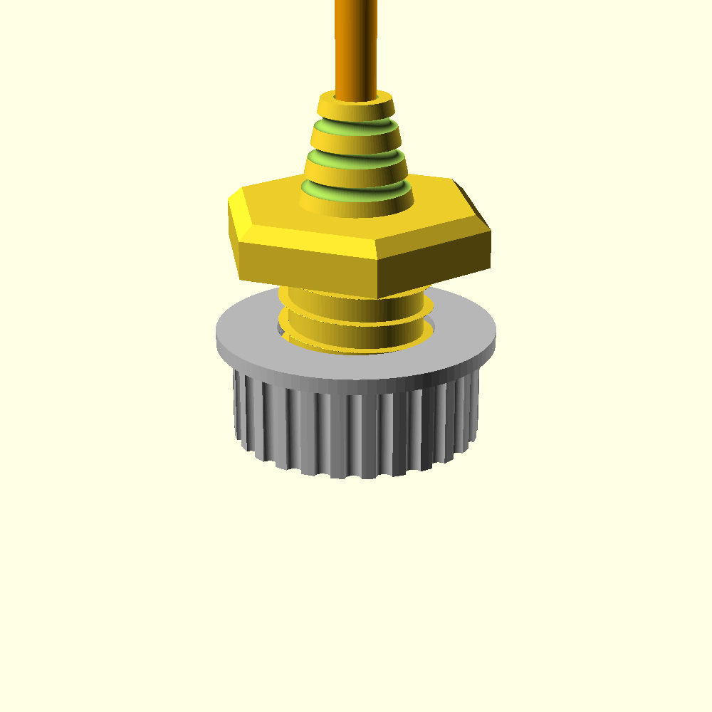
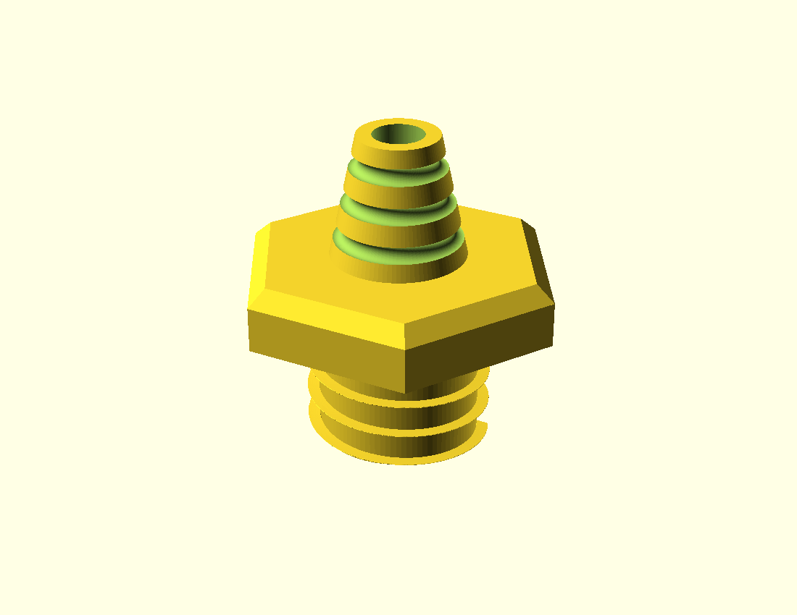
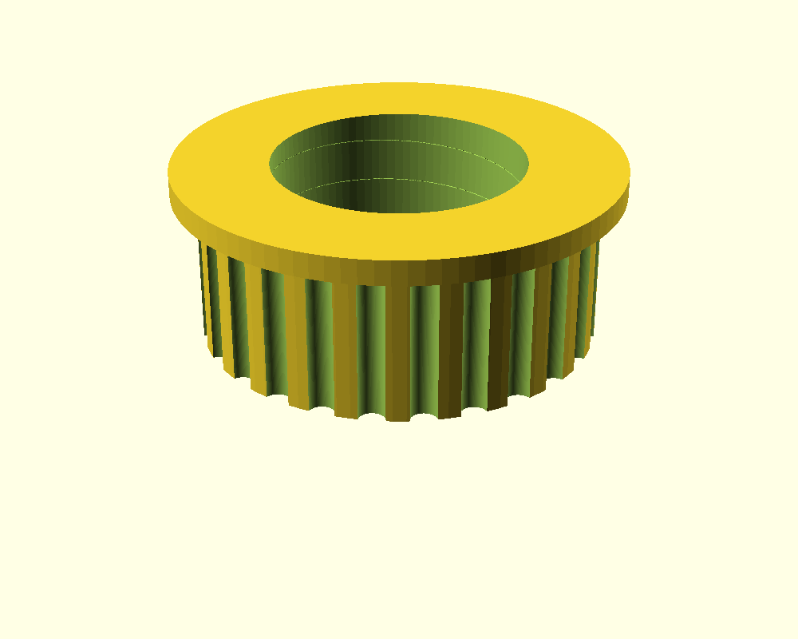

Renders
Live OpenSCAD renders — body (gold) + knurled compression nut (silver), exploded with the cable.



Specs
| Footprint | — |
|---|---|
| Cable / plug | — |
| Thread | — |
| Panel mount | — |
| Seal + strain relief | — |
| Print set | — |
A panel-mount feedthrough for a pre-terminated USB-C cable. The body splits on
its axis (clamshell) so the cable lays in — the molded plug never has to pass the bore.
A knurled compression nut squeezes the halves and clamps the panel. Hex flange, coarse
threaded barrel, ribbed strain-relief snout, O-ring seal groove. Source:
cw_link/usbc_gland.scad (self-contained threads, no libraries).
Live OpenSCAD renders — body (gold) + knurled compression nut (silver), exploded with the cable.



| Footprint | — |
|---|---|
| Cable / plug | — |
| Thread | — |
| Panel mount | — |
| Seal + strain relief | — |
| Print set | — |